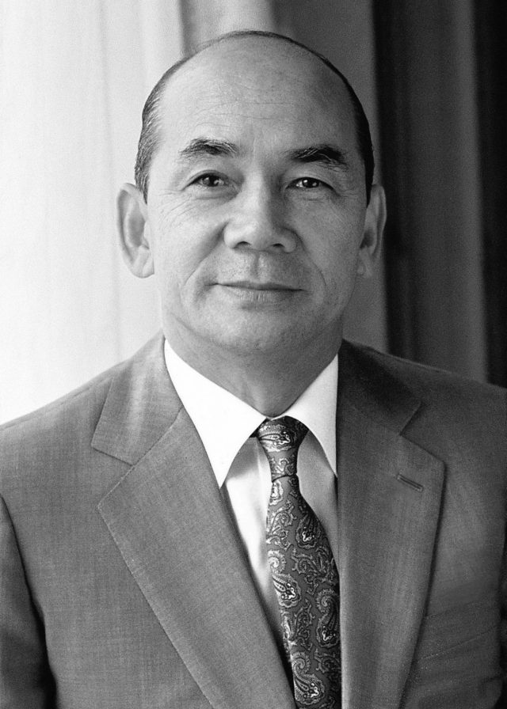

매체 뉴스웨이보도일 2018-01-22

박태준 포스코 회장은 불모지나 다름없던 한국 철강을 세계 6위의 철강대국으로 이끈 신화적 인물이다.
강한 추진력 바탕···‘제철보국’ 이끌어
세계 6위 철강대국 20년 韓철강 투신
유언마저 “국가 산업동력 성장해달라”
박태준 초대 포스코 회장은 한국을 대표하는 ‘철강왕’이다. 재계서열 6위인 포스코그룹의 토대를 마련한 것은 물론 철강산업이란 단어가 전무하던 한국을 세계 6위의 철강대국을 키워내는데 혁혁한 공을 세운 인물이다.
1927년 태어난 박태준 회장은 일제시대 일본으로 건너가 와세다 대학 기계공학과에 입학하며 공학도로써의 꿈을 키웠다. 하지만 1945년 해방 이후 귀국해 육군사관학교에 입교, 6기로 졸업한 뒤 군인의 길을 걸었다.
박정희 전 대통령과의 인연도 이 때 맺어졌지만 5·16 군사쿠데타에는 직접 가담하지 않은 것으로 알려져 있다. 이후 군부가 정권을 잡은 뒤 박 회장은 국가재건최고회의 의장비서실장과 상공담당 최고위원으로 활동하며 제1차 경제개발 5개년 계획 입안에 참여했다. 1963년에는 육군소장으로 예편했고 1964년 대한중석 사장으로 취임하며 기업가로 투신하게 된다.
대한중석을 1년 만에 흑자전환시키며 실력을 인증받은 박 회장은 1968년 박 전 대통령의 지시로 포항공업제출 주식회장 초대 사장에 임명됐다. 산업화를 위해선 제조업의 근간인 철을 반드시 생산해야 한다는 데 두 사람이 의기투합한 것이다. 이 때 박 회장은 평소 친분이 있던 신일본제철의 이나야마 요시히로 회장에게 부탁해 철강 노하우를 전수받았다.
요시히로 회장은 공장 설립 단계부터 일본 엔지니어들을 파견해 기술을 전수했고, 박 회장 이하 포항제철 직원들은 초보적인 것부터 하나하나 철강 생산을 위한 모든 것을 습득했다. 그 결과 1973년 6월 1고로에서 첫 번째 쇳물이 생산됐다. 해방 후 30년 가까이 번번히 좌절됐던 한국 철강의 태동이 처음으로 시작된 것이다.
이후 포항제철은 박태준 회장의 진두지휘 아래 놀라운 속도로 성장했다. 박 회장은 평소 임직원들에게 ‘제철보국(製鐵報國)’과 ‘우향우 정신’을 강조했다. 제철보국이란 ‘대일청구권자금의 일부로 설립된 포항제철을 반드시 성공시켜 나라에 보답하자’는 의미며, 우향우 정신은 ‘초항제철소 건설에 죽기 살기로 달려들고 실패하면 사무실에서 우향우 한 다음 영일만 앞바다에 몸을 던져야 한다’고 독려한 데서 비롯된 말이다.
포스코 포항제철소 정문에는 지금도 ‘자원은 유한, 창의는 무한’이라고 적힌 박 회장의 문구가 걸려 있다. 그는 쇳물 생산에 만족하지 않고 곧바로 일관 종합제철소 건설에 박차를 가했다. 그 결과 포항제철은 1970년대에 이미 총 22개 공장 및 설비로 구성된 종합제철 일관공정을 완성하는데 성공했다.
박 회장은 포항제철이 포스코그룹으로 거듭난 이후에도 여전히 최고경영자(CEO)로서 회사를 이끌었다. 1981년 제11대 국회의원을 시작으로 정계에 입문했지만 1992년 회장직에서 물러날 때 까지 20년간 포스코의 산증인으로써 책임을 마다하지 않았다.
은퇴 이후에는 자신의 호를 딴 포스코청암재단을 만들어 과학·교육·기술·봉사 등 사회 각 분야에서 뛰어난 공적을 세운 개인 또는 단체를 지원하다 2011년 12월13일 영면했다.
사망 전 그는 “포스코가 국가 산업 동력으로 성장하길 바란다”는 유언을 남기고 서울 현충원 사회유공자묘역에 안장됐다. 평생 한국 철강을 위해 몸바친 그다운 마지막 한 마디였다.
김민수 기자 hms@